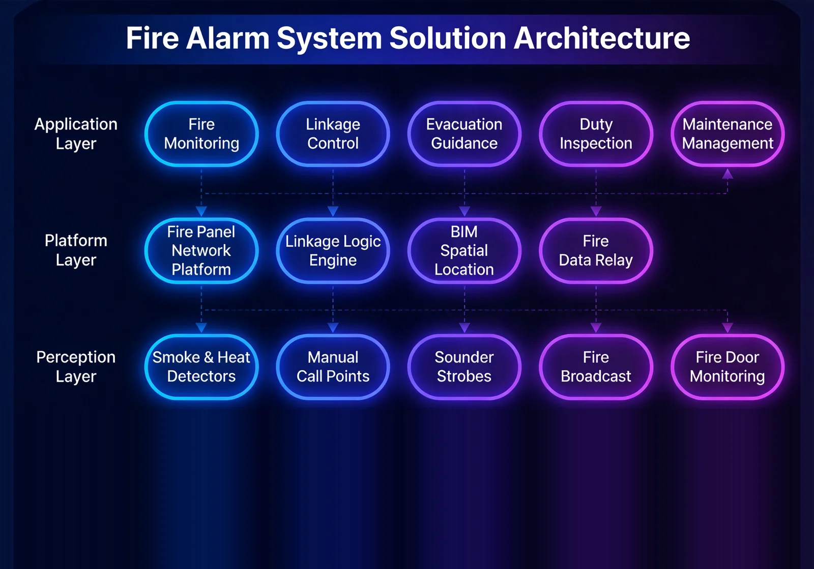

For commercial buildings, residential communities, industrial plants, warehousing and logistics facilities, hospitals, schools and all kinds of buildings, an automatic fire alarm and intelligent linkage control solution that addresses the core pain points of delayed fire detection, slow linkage response and difficult fire compliance management, achieving early fire warning and full-chain intelligent linkage.
Solution Overview
Provides automatic fire alarm and intelligent linkage control solutions for all kinds of buildings, addressing delayed fire detection, disconnected linkage response and difficult compliance management, and achieving early fire warning and full-chain intelligent linkage.
Applicable to: Commercial buildings, residential communities, industrial plants, warehousing and logistics, hospitals, schools.
- High-sensitivity detectors enable early fire warning
- Intelligent algorithms reduce false alarm rates
- Strong linkage control capability automatically executes fire response plans
- Supports networked supervision and connection to city remote fire monitoring platforms
Benefits: Buys valuable time for evacuation, effectively contains fire spread, and meets fire compliance requirements.
Business Challenges
In building fire safety management, customers often face late fire detection, disconnected linkage response and frequent false alarms, and urgently need an automatic fire alarm system with early warning, intelligent linkage and easier compliance supervision.
Late fire detection
Manual patrols cannot cover a building around the clock; early-stage fires go unnoticed.
Disconnected linkage response
After an alarm, each fire subsystem must be started manually, missing the best response window.
Frequent false alarms
Traditional detectors react to dust and steam; high false-alarm rates breed complacency.
Compliance records slow to produce
Inspection records are scattered; government checks cannot be answered quickly, adding compliance risk and rework cost.
Accurate early warning
High-sensitivity detection plus intelligent algorithms are needed for early detection with fewer false alarms.
Full-chain automatic linkage
After alarm confirmation, sprinklers, smoke exhaust and evacuation broadcast should execute automatically.
Typical Scenarios:
Target Roles: Fire duty staff, property managers, safety directors, government fire inspectors.
Solution Architecture
Built on a distributed “detection-alarming-linkage-management” architecture covering fire detection, alarm control, linked execution and networked supervision, with support for linkage to sprinkler, smoke exhaust, emergency lighting, access control and PA systems, and connection to city remote fire monitoring platforms.

Multiple detector types watch for fire around the clock; the control panel processes signals and confirms zones; the linkage layer automatically starts sprinklers, exhaust, shutters, lighting, broadcast, access release and elevator recall; the management layer maps the fire graphically and supports networked supervision.
Core Modules
Fire detection
Photoelectric smoke, heat, flame and combustible gas detectors combined for early discovery.
Alarm control panel
Signal processing and zone confirmation; intelligent algorithms cut false alarms.
Linkage control
The full fire response plan executes automatically after alarm confirmation.
Graphic management
The graphic display shows fire locations clearly at a glance.
Networked supervision
Connects to city remote fire monitoring platforms with digital inspection records.
Integration Capabilities:
- Linked with sprinkler, smoke exhaust, fire shutter, emergency lighting, access control and PA systems
- Supports connection to city remote fire monitoring platforms
- Linked with building management systems to switch to emergency mode on fire
Advantages & Delivery
With high-sensitivity detection and intelligent linkage at the core, we deliver international-fire-standard systems that protect evacuation time and fire containment capability, backed by solution design, installation and wiring, fire acceptance support and periodic inspection.
Differentiated Advantages
Early Fire Warning
High-sensitivity detectors discover fires as early as possible, buying precious time for evacuation.
Smart Algorithms Cut False Alarms
A lower false-alarm rate avoids the "cry wolf" effect and raises operators' trust and response speed.
Automatic Pre-Plan Execution
Once an alarm is confirmed, the full linkage chain runs automatically with no manual intervention.
Graphical Localization
Fire location shown graphically, making command intuitive and fire-force dispatch precise.
Multi-System Linkage
Links with PA, access control, CCTV and emergency lighting for coordinated evacuation and rescue.
Code-Compliant Acceptance
Design, construction and acceptance follow fire codes; we support government acceptance with complete records.
Implementation Process
Requirement Research
Sort out building zones, protection levels and linkage needs.
Solution Design
Detector placement and linkage logic design.
Equipment Supply
Provide detection, control and linkage devices per the design list.
Installation & Cabling
On-site installation and alarm-bus cabling.
System Commissioning
Zone tests, linkage tests and false-alarm verification.
Fire Acceptance
Support government acceptance with complete records.
Training & Handover
Train fire-duty staff before handover.
Service Guarantee
Client Value
Fires are detected and alarmed at the earliest moment, buying evacuation time; equipment is linked automatically to contain spread; fire-code compliance reduces legal risk.